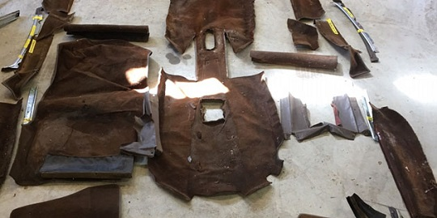
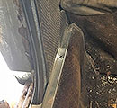
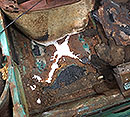
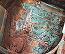
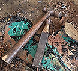
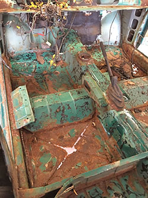
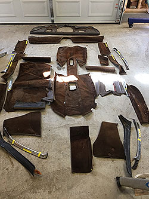

March 2017 - Carpet & Interior Trim Removal
click images to enlarge
An Elegant Lady
The Neue Klasse Coupé is an elegant lady. Commencing to disassemble the interior trim and remove the carpet I assumed would be like the trusty BMW 2002 (and thus move along fairly quickly). This proved not to be so. I can see where the early 2002s (1968 - 73) sectional carpet concept of maybe 10 pieces evolved from. The early 02s had nice synthetic loop carpet with some chrome accents (seat bases). The final years of the 2002 had simply a one-piece carpet, which truthfully compared to the early years, seemed like cheap crap that faded after a few years. The chrome treatment was replaced with flimsy plastic in some areas.
The mid 60's e120 2000c has nearly 20 pieces of sectional carpet. The carpet is most likely wool in keeping with its luxury standard. Remember these cars actually had a higher sticker price than the Jaguar E-types of the time. The carpet sections all lay down in a precise manner secured by a lot of chrome accents. All parts employ A LOT of tiny screws. In my 40 years of owning and working on BMWs including numerous 2002s, an 80's era 5-series, an e9 2800cs, a 2500 e3 sedan, an e30, and even a 2011 650i; none had this level of detail. It took someone in Munich back in 1966 a lot time to screw all those screws in because it is taking me a lot of time to take them all out. The 2000 c seems like the last throwback to old school craftsmanship. This being said it took some time to reverse engineer and document the process. The process actually has to begin with the extensive and complex chrome and rubber gaskets along the doors.
( photo from an original 2000 c sales brochure promoting the extensive attention to craftsmanship)
{kind=link}
Removing Chrome Trim

{kind=link}
Pulling out Front and Rear Carpet

{kind=link}
Remove the carpets and ... "Surprise..."
Removing Hard Tar-like Sound Proofing
BMW in the 1960s and 1970s used a thick slightly tar-like substance poured onto the interior surfaces for sound and heat insulation. This treatment concept most likely came from the same department, as the decision to weld under body metal sections with exposed seems to tire road spray. All of the tar has to go. Most say use dry ice. I know you don't want to use heat which makes it more viscous and gooey. I discovered it was easy simply to chip away it with small and even large sections breaking free using a heavy angle tipped chisel and small hammer. Wear safety glasses, chips flying everywhere with some velocity.
 |
 |
{kind=link}
{kind=link}
In the end, I discovered two bad rear floor pans, and significant rust to the right of the passenger side floor pan. I was pleased to find the driver's floor pan intact. I was surprised to note the thin application of paint to the cockpit area. If you look closely, it is easy to see areas with minimal final coat with grey undercoat showing. Paint technology was primitive in the 1960's compared to the advanced urethanes available today. It is no wonder the sheet metal was vulnerable to hidden water seepage under the carpets in these cars.
 |
 |
{kind=link}
{kind=link}